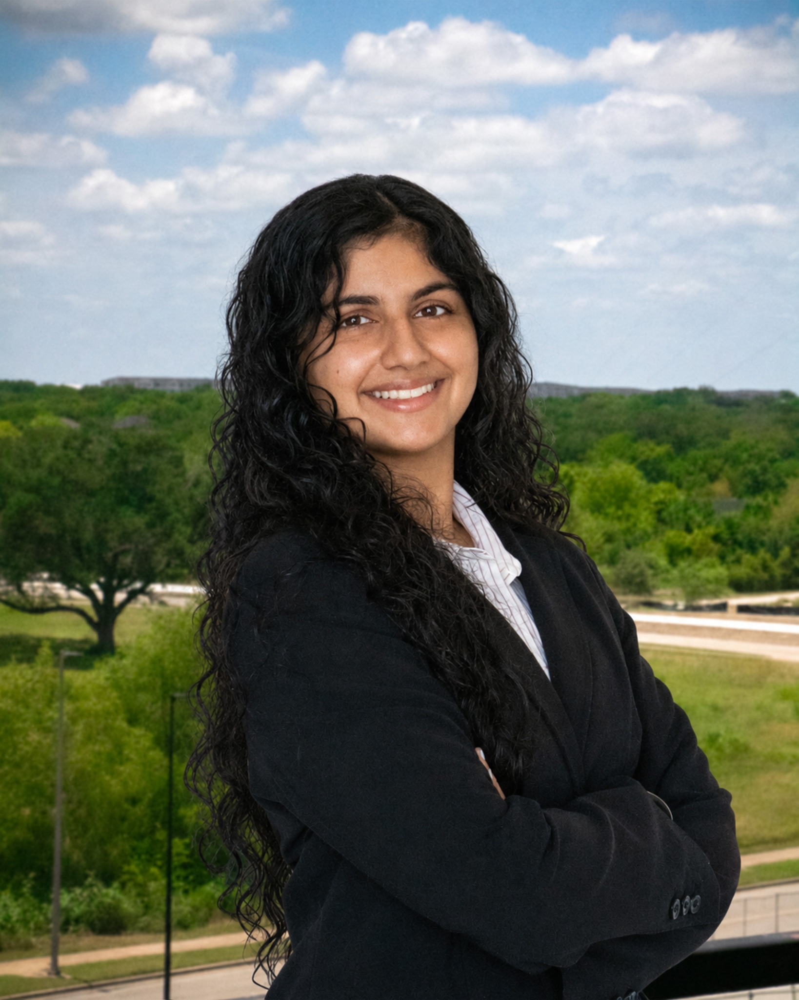
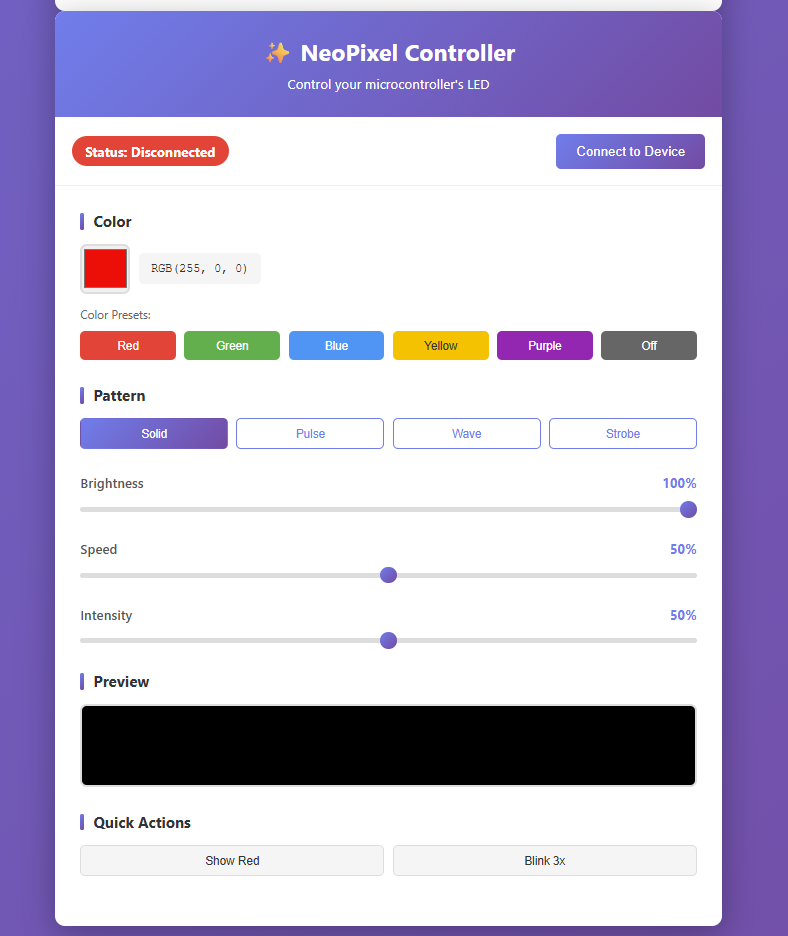
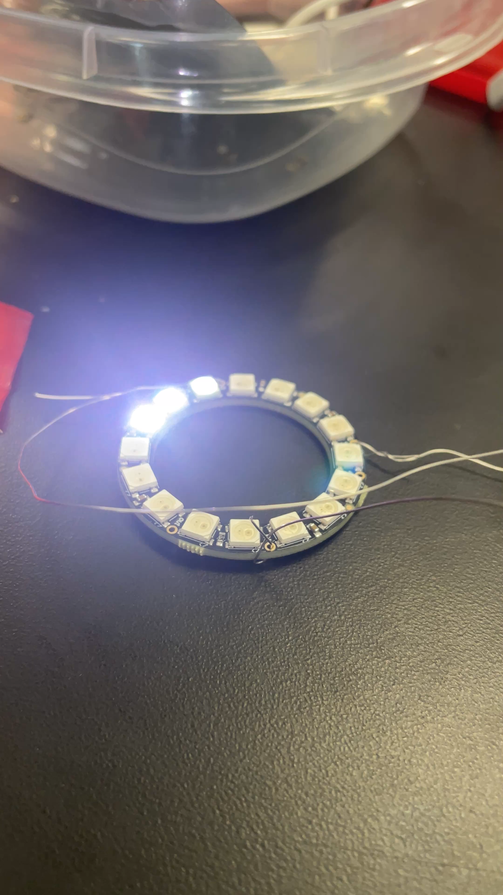
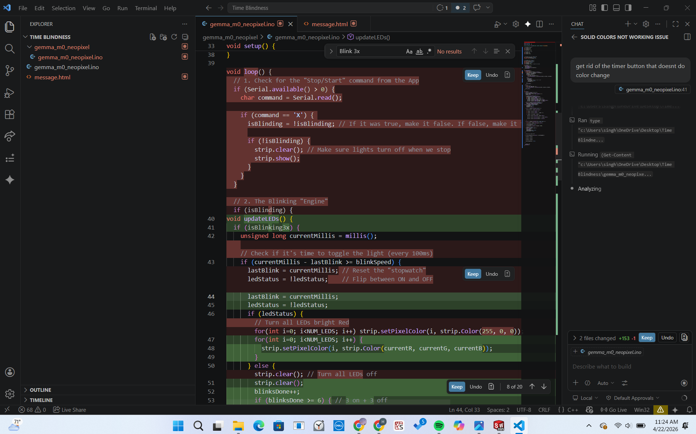

I build at the edge of biology, devices, and the nervous system.
I’m Hena Singh, a Texas A&M Biomedical Engineering student pursuing a Neuroscience minor. My work spans spinal cord injury research, tissue clearing and vascular imaging, human-centered neurotechnology, and medical-device prototyping.

Engineering with a neuroscience lens.
I’m most energized by problems where understanding biology isn’t enough—the solution also has to be measurable, buildable, and useful to real people.
My research path has moved from nanoparticle–immune cell work into spinal cord injury and neuroengineering. In the McCreedy Lab, I’ve worked with sciDISCO tissue clearing, spinal cord vasculature, ImageJ, Imaris, cryostat sectioning, WGA-perfused samples, and mouse-handling workflows.
Alongside research, I like building tangible systems: a wearable for time awareness, a neonatal mucus extractor, and circuit/signal-processing projects that connect engineering analysis to physiology. Long term, I’m interested in neurotechnology, neural injury and repair, neurodegeneration, and translational tools that improve patient function.
Texas A&M University
BS, Biomedical Engineering · Aug 2024–May 2028
Minor in Neuroscience
Physiology for Bioengineers · Circuits · Signals & Systems · Imaging Living Systems
Seeking Summer 2027 opportunities in bioengineering, neuroscience, neurotechnology, and related R&D.
From wet lab to image analysis.
My research experience spans cellular methods, tissue handling, imaging workflows, and quantitative analysis.
McCreedy Lab · TAMU Spinal Cord Initiative
- Evaluated spinal-cord dimensional changes across a 5-day sciDISCO tissue-clearing experiment using ImageJ.
- Exported workflows for 97 spinal-cord-injury sections in Imaris 11.0 and analyzed SCI vasculature in Imaris 10.2/11.0.
- Performed cryostat sectioning and slide mounting, examined WGA-perfused samples for vascular repair, and earned Mouse Handling Certification.
Gaharwar Lab
- Supported research on MoS₂ nanoparticles and macrophage/monocyte phenotypes.
- Shadowed 20+ experiments involving PCR, Western blotting, Nanodrop measurements, pipetting, centrifugation, and experimental data recording.
Time Blindness wearable
A wearable time-awareness concept that uses LED motion and color to make elapsed time visible without alarms, buzzing, or constant clock checking. The design centers on peripheral awareness, customizable routines, and a calm visual gradient rather than interruption.



Neonatal mucus extractor
Designed during the UT National Medical-Device-Make-A-Thon for neonatal patients in low-resource settings, combining device-design decisions with respiratory physiology, biostatistics, and manufacturability considerations.
Physiology-informed circuit & signal work
Course and lab work includes analog circuits, signal processing, biomedical measurement, and physiological modeling—using tools such as Python, LabVIEW, and circuit simulation to connect electrical behavior to biological systems.
Technical range, grounded in experiments.
Research & imaging
ImageJ · Imaris · sciDISCO workflows · cryostat sectioning · WGA vascular imaging · mouse handling · PCR · Western blot · Nanodrop
Engineering & computing
Python · R · Arduino/C++ · SolidWorks · CAD · 3D printing · LabVIEW · VS Code · circuit & signal analysis
Communication & operations
CVENT · Excel · Teamwork · Canva · Qualtrics · event logistics · documentation · cross-functional teamwork
Beyond the lab.
Engineering Events Student Assistant
Co-led 20+ scholarship banquets, donor luncheons, and engineering socials at Texas A&M, and revised an 80+ page student handbook for future employees.
Community & student involvement
Public volunteer at Aggieland Humane Society and former BMES Marketing Committee member, with experience balancing technical work, service, and communication.